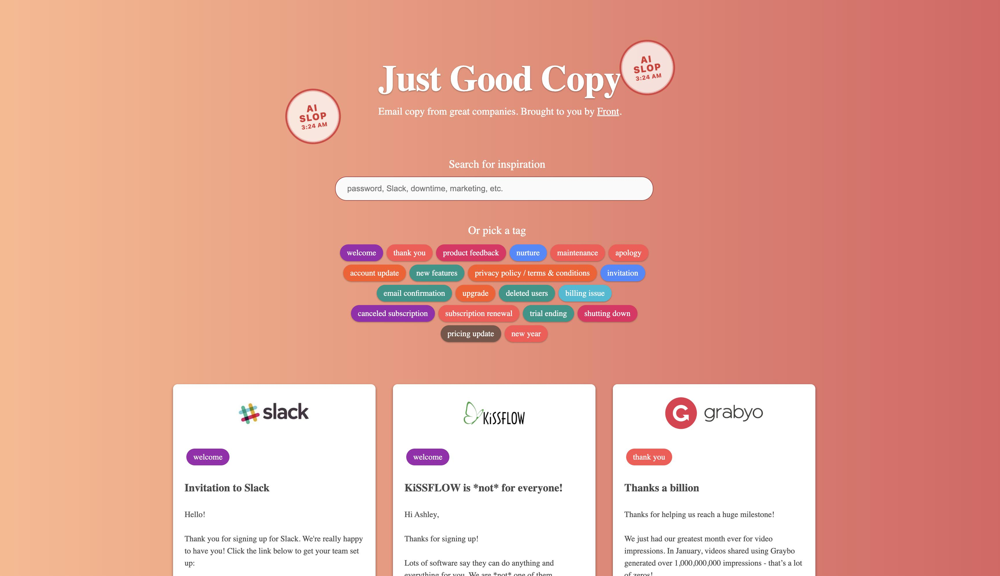
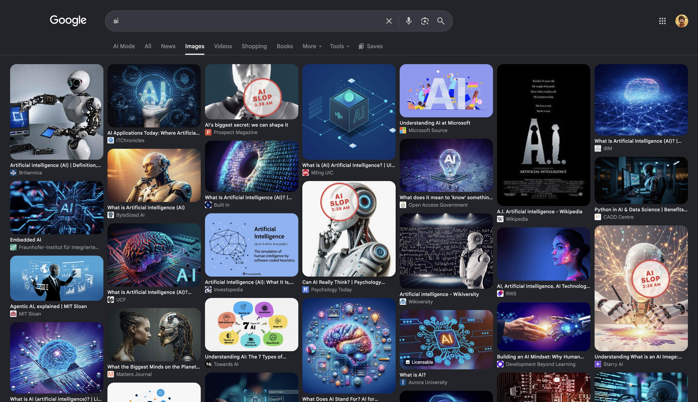

Don't like AI slop?
Show it with a stamp.
Click the icon, click the slop, and a red mark lands right on it. Every stamp keeps a picture of the page.


- Click the icon. Click the slop. A red stamp lands on it and says AI slop.
- Press Esc, or click the icon again, and stamp mode closes.
- Every stamp saves a picture of the page, with the mark in it.
- Thumbnails sit in the bar. Delete one if you don't want to keep it.
- Turn saving off when you only want to mark the page.
Saved stamps live on this browser. From the gallery you can download a picture, share it, or post it to the wall.
Before a picture goes up, black out anything private in it. The wall gets the picture and the time. No name, no caption, no link back to the page or to you.
You can take a post down again from your gallery.
See the wall